软件开发文档的编写方法
软件开发文档是软件开发过程的输出产物。软件开发过程的不同阶段将产生不同的软件开发文档。例如：软件需求分析阶段将产生软件需求规格说明书，软件概要设计阶段将产生概要设计说明书，软件详细设计阶段将产生详细设计说明书。按照软件工程的原则，软件开发过程输出这些文档的目的是为了保障软件开发的质量，确保软件项目能够按时完成，并保质保量。下面重点介绍各类软件开发文档的编写方法。
软件过程模型
软件过程模型是软件过程的简化表示。典型的软件过程模型有：瀑布模型、增量式开发模型和面向服用的软件工程模型。以瀑布模型为例，其涉及的开发活动如图1所示。
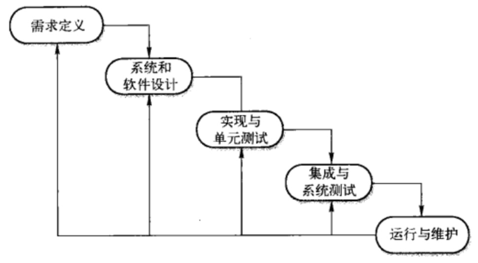
各个开发活动对应产出的软件开发文档主要有：
- 可行性研究报告
- 项目开发计划
- 软件需求说明书
- 概要设计说明书
- 详细设计说明书
- 数据库设计说明书
- 数据要求说明书
- 测试计划
- 测试分析报告
- 项目开发总结报告
- 操作手册
- 用户手册
- 开发进度月报
软件开发文档
可行性研究报告
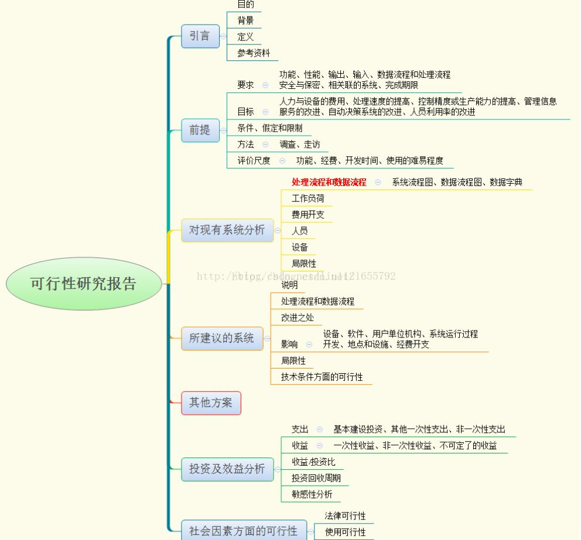
项目开发计划
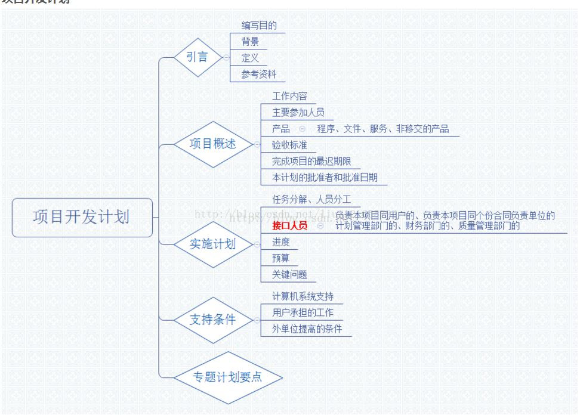
软件需求说明书
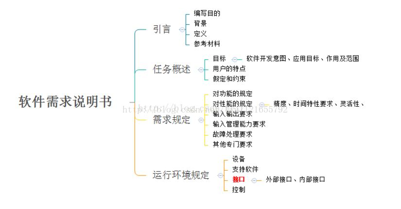
概要设计说明书
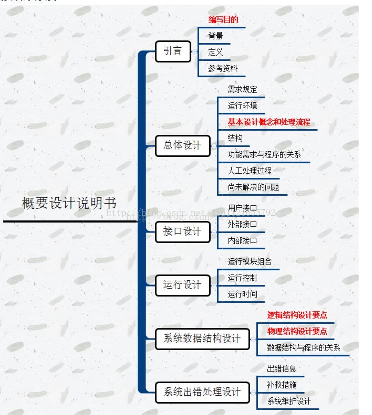
详细设计说明书
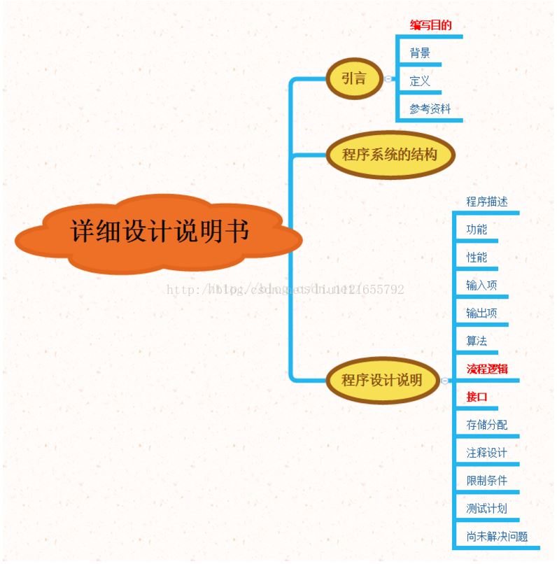
数据库设计说明书
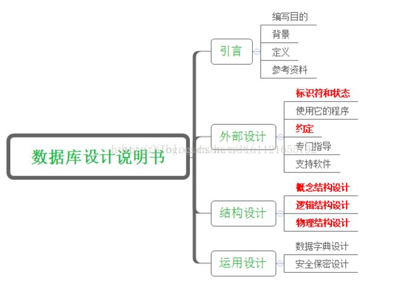
数据要求说明书
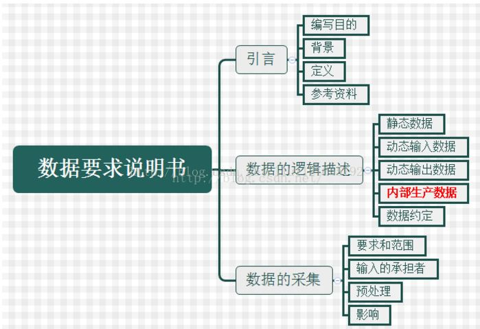
测试计划
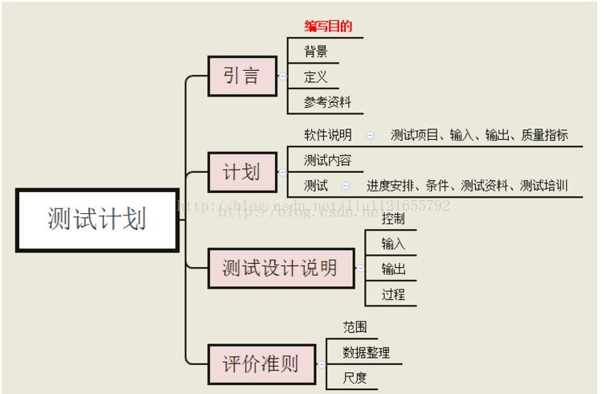
测试分析报告
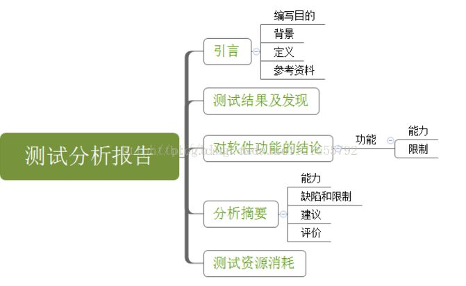
项目开发总结报告
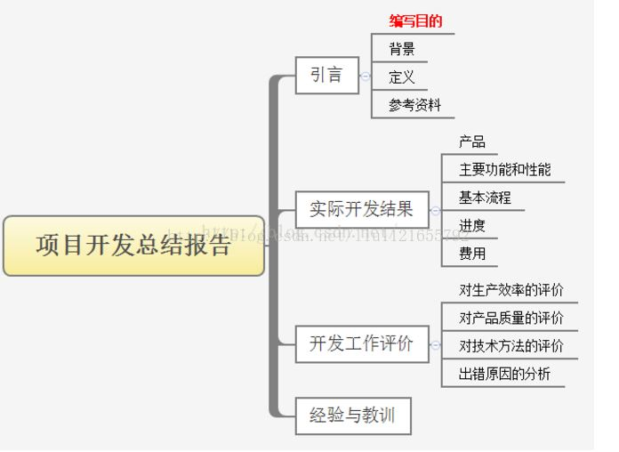
操作手册
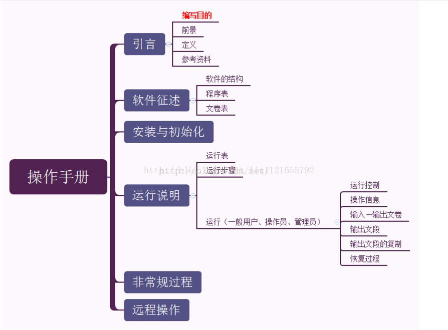
用户手册
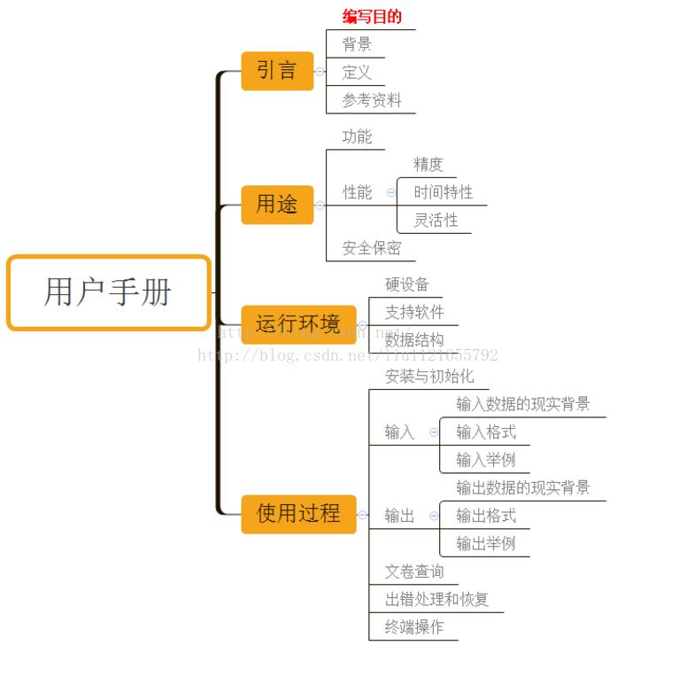
软件开发文档的使用
软件文档分类
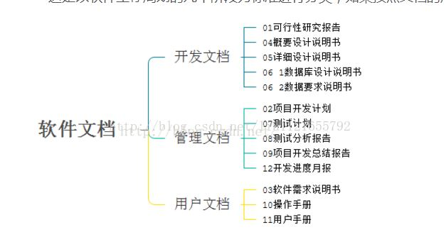
软件文档读者
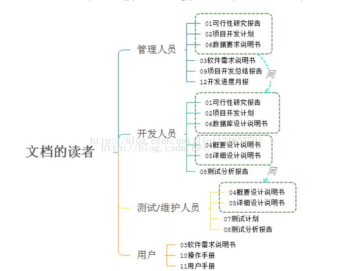
软件文档使用
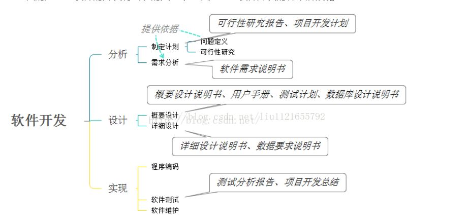
参考链接
- 软件工程,by wikipedia.
- 软件需求，概要设计，详细设计（文档）怎么做，做什么？,by 安东尼_Anthony.
- 软件工程文档总结,by BONIC.
- 国标：计算机软件文档编制规范,by 宋哥.
- 软件测试流程,by HenryZ.Tang.